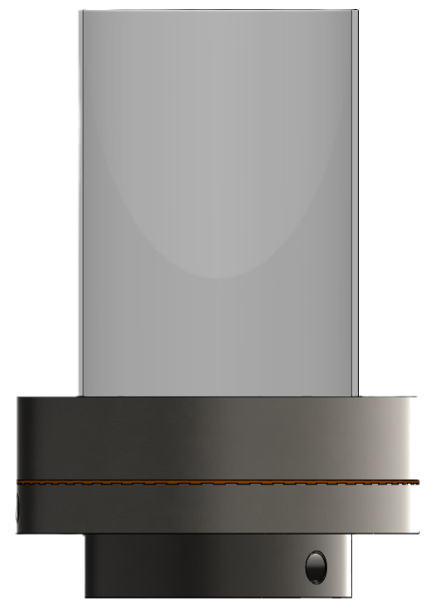
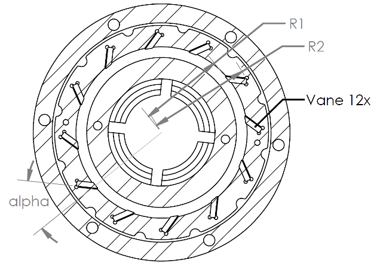
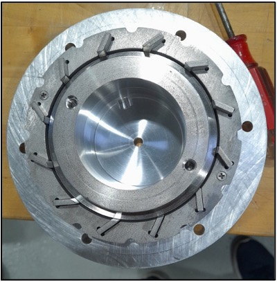

Building the system from concept through experimental validation
The goal of this work was to develop a repeatable experimental platform for studying high-temperature combustion and thermal-fluid behavior while maintaining enough modularity to change burner hardware and operating conditions without rebuilding the complete test system.
My role extended beyond running experiments. I developed mechanical hardware in SolidWorks, translated design concepts into manufacturable components, integrated process-gas delivery and instrumentation, commissioned the test platform, developed automated controls, and used experimental measurements to evaluate the resulting hardware.
Engineering problem
The platform needed to support controlled high-temperature operation, optical diagnostic access, interchangeable hardware, multiple process gas streams, and repeatable experimental conditions.
Mechanical geometry, component interfaces, material selection, instrumentation, controls, flow delivery, and test repeatability therefore had to be treated as one integrated engineering system.
My role
I worked across mechanical design, prototype development, component definition, assembly, instrumentation, automated controls, experimental planning, troubleshooting, diagnostic integration, and engineering data analysis.
This allowed design decisions to be evaluated directly through physical testing rather than treating hardware development and experimentation as separate activities.
From engineering concept to working experimental hardware
I approached the project as an iterative hardware-development process: define the required function and geometry, convert the concept into manufacturable components, integrate the supporting subsystems, and validate the finished hardware experimentally.
Concept Development
Developed system-level and component concepts in SolidWorks to define burner architecture, modularity, mechanical interfaces, and optical access.
Detailed Engineering
Applied GD&T, tolerance stack-up, fit and clearance analysis, DFM/DFA, materials selection, engineering drawings, and BOM development.
Build & Integration
Integrated fabricated hardware with gas delivery, sensors, NI cDAQ, LabVIEW controls, and optical diagnostic equipment.
Test & Validate
Executed structured experiments and used diagnostic measurements, statistical analysis, and engineering troubleshooting to evaluate system performance.
From Concept to Hardware
The comparisons below show how the initial design concepts progressed into manufactured components, assembled experimental hardware, and ultimately an operating combustion system.
Jet-Swirl Burner System
System-level burner concept translated into manufactured hardware and subsequently operated as an optically accessible experimental combustion platform.

Jet-Swirl Burner Design
System-level model used to establish burner architecture, component packaging, the optical section, and mechanical interfaces before fabrication.

Assembled Experimental Burner
Manufactured and assembled burner with the quartz optical section installed for experimental operation and optical diagnostic access.
Burner Operating Under Reacting Conditions
The completed jet-swirl burner operating with the quartz optical section installed. The transparent combustion chamber provides direct visual access to the flame during experimental testing and supports simultaneous optical diagnostic measurements.
Radial Swirler
Engineering geometry translated into the machined component used within the final burner assembly.

Swirler Geometry
Engineering definition of the radial vane arrangement and geometric parameters used to translate the flow-control concept into a manufacturable component.

Machined Swirler
Fabricated swirler produced for integration into the experimental burner, allowing the design geometry to be evaluated as part of the complete test platform.
Translating the design into manufacturable hardware
The mechanical design had to balance experimental flexibility, manufacturability, high-temperature operation, optical access, and reliable assembly. I therefore incorporated tolerance definition, fabrication constraints, component interfaces, and material compatibility during the design process rather than addressing them only after the geometry was complete.
Connecting mechanical hardware, process gases, sensors, and controls
Once the mechanical platform was assembled, the project became a multi-subsystem integration problem. I commissioned an ammonia/methane/air delivery system using mass flow controllers and integrated pressure and temperature sensing with NI cDAQ hardware.
LabVIEW was used for mass-flow-controller setpoints and automated data logging, supporting synchronized and repeatable experiments. The complete setup connected physical hardware, process control, instrumentation, and data acquisition within one experimental architecture.
During commissioning and test campaigns, I applied root-cause analysis and FMEA principles to isolate issues associated with mechanical hardware, flow delivery, controls, instrumentation, and diagnostic equipment.
Evaluating the hardware through controlled experiments
The completed platform was used for structured testing across multiple operating variables rather than a single demonstration condition. I planned a four-variable Design of Experiments and combined system measurements with several optical and emissions-diagnostic techniques.
- FTIR spectroscopy: measured gaseous emissions including NOx and ammonia.
- Particle Image Velocimetry: characterized velocity fields, flow structure, and recirculation.
- Chemiluminescence imaging: provided optical measurements of flame and reaction-zone behavior.
- Computed Tomography of Chemiluminescence: extended optical measurements to three-dimensional flame reconstruction.
- Design of Experiments: provided a structured framework for comparing operating conditions and identifying system sensitivity.
Converting experimental measurements into engineering information
The diagnostic systems generated datasets that were impractical to process manually. I developed Python and MATLAB workflows for image processing, calibration, statistical analysis, visualization, and batch processing.
Typical optical datasets contained approximately 200–300 images per test condition. Automating the workflow enabled repeated operating conditions to be processed consistently and made quantitative comparison across the experimental matrix practical.
The objective was not simply to generate figures, but to use experimental measurements to evaluate hardware performance, identify system behavior, and support engineering decisions.
Experimental platform and performance validation
The final platform provided repeatable process data and supported engineering evaluation in collaboration with CenterPoint Energy and the University of Minnesota Duluth.
Reported reduction in NOx emissions compared with conventional burners while evaluating the experimental burner configuration.
What this project demonstrates
Hardware Development
Progression from CAD concepts through detailed mechanical definition, fabrication, assembly, and operating experimental hardware.
System Integration
Integration of mechanical hardware, process-gas delivery, sensors, automated controls, diagnostics, and synchronized data acquisition.
Test & Validation
Structured experimental planning, diagnostic measurements, troubleshooting, statistical analysis, and system-performance evaluation.
Tools & Methods
Related Work
A. Halder, C. Goertemiller, A. Hoxie, and W. F. Northrop, “Experimental investigation of a 20 kW atmospheric pressure pure ammonia jet-swirl burner,” Proceedings of the Combustion Institute, 2026.